Modernizing Retail Mobility. Each frame shows the key moment of its scene in final type and color. Product screens are the real captures from the deck. No motion yet.
1920×1080 · 153s · 16 scenes · music, no VO
Act I · The premise0:00 to 0:21
Retail runs on iOS
Modernizing Retail Mobility.
Matin, Lululemon.
01 · OPEN00:00 to 00:07
Kicker types first, then the headline rises word by word; name fades in grey. Logo sits quietly bottom right.
in: cut from black
The starting point
We replaced an aging MDM platform.
What changed was much bigger.
02 · STARTING POINT00:07 to 00:14
Line one lands and holds, then dims to grey as line two scales in at full white. The status ring is introduced grey and broken.
in: push left
Two layers, two jobs.
ienterprise
Builds on that and manages operations.
MDM
Manages the devices. Reliably.
03 · TWO LAYERS00:14 to 00:21
MDM slab rises from the bottom first, the arrow draws up, then the ienterprise slab lands on top of it.
in: push left
Act II · Before and after0:21 to 0:42
The problem
Before ienterprise.
Educators could not see if a device was healthy.
Every issue went to the Educator Help Center.
Every fix needed access to an MDM console.
Troubleshooting took too long, with back-and-forth between stores and the Educator Help Center.
One educator, waiting.
→
One guest, waiting.
04 · BEFORE00:21 to 00:33
Four pains stack in, one every ~1.4s, then dim. The pills land last and the frame holds still for 1.5s on "One guest, waiting."
in: cut (act change)
The answer
After ienterprise.
Enterprise Manager
One view across every store and every device.
For the people who run the fleet.
Site Manager
Every device in the store, and whether it is healthy.
For the people who run the store.
05 · AFTER00:33 to 00:42
The broken ring closes to green first, then shrinks into the kicker. Cards rise left, then right. Answers the grey rings of 04.
in: cut
→
The spine · the status ring
SPINEruns 02 to 16
One device-health ring threads the film, taken from the Site Manager Health screen: grey and broken through the before act, closed and green from 05, last thing lit in 16.
Act III · The platform at work0:42 to 1:49
Enterprise Manager · Retail Technology
One view across every store and every device.
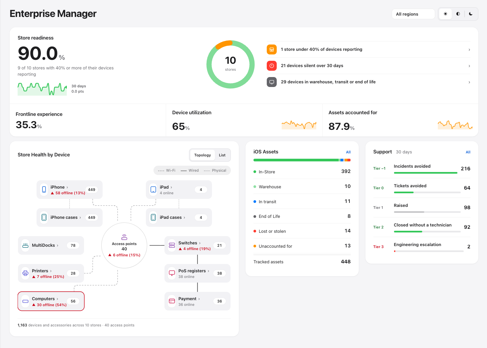
06 · EM RETAIL TECH00:42 to 00:50
Window slides in from the right, then one continuous slow push toward "Store readiness 90.0%."
in: push left
Enterprise Manager · Networking
All devices in the store and the network, correlated.
The fleet, understood before the phone rings.
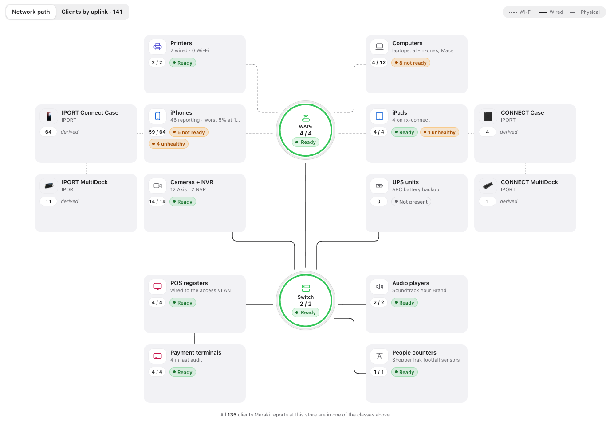
07 · EM NETWORKING00:50 to 00:58
Camera drifts along the topology from access point out to the device groups. Sub line fades in at 4s.
in: push left
Site Manager · Store leaders
Is the store ready to open? One glance.
Every device in the store, and whether it is healthy. iPhones, iPads, payment devices, printers.
Ready for business.
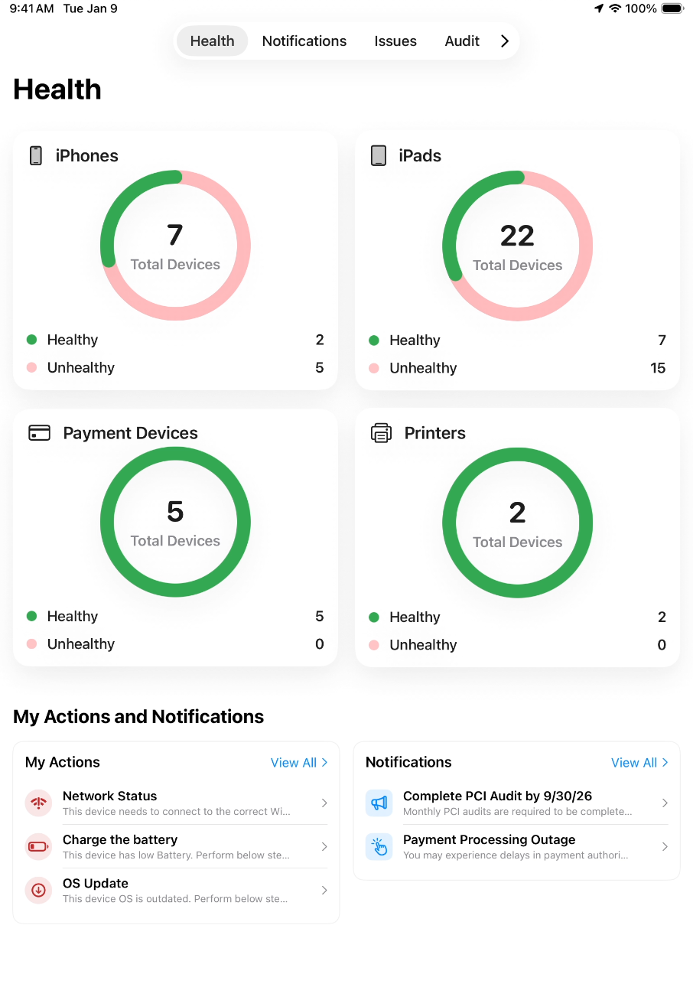
08 · SM STORE LEADERS00:58 to 01:06
iPad rises in on the right, headline left. "Ready for business." lands last with the green dot.
in: push left
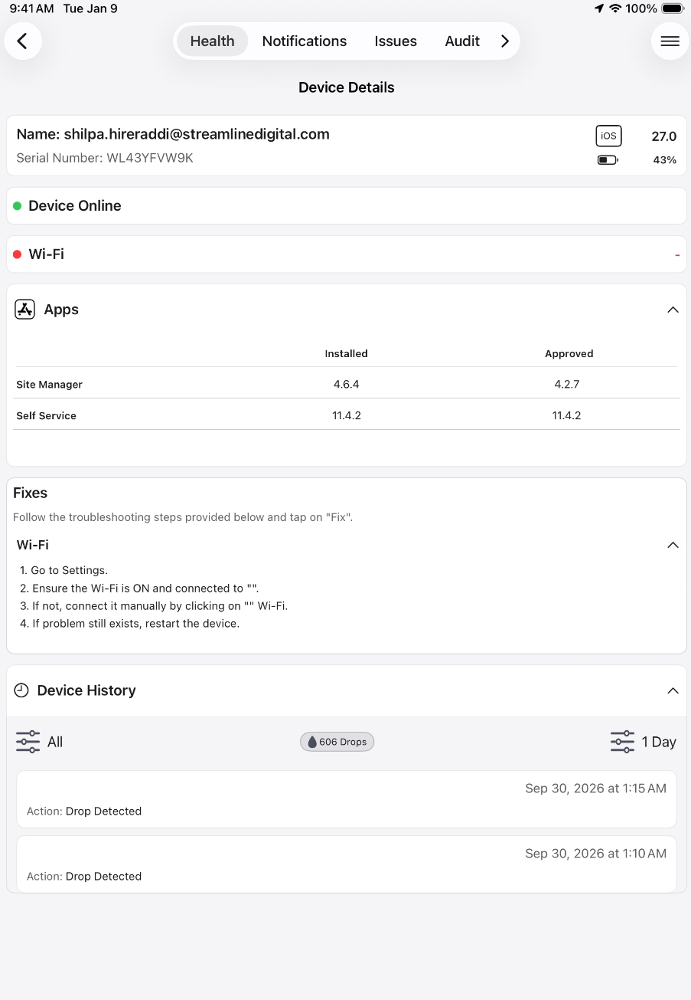
Site Manager · Educators
See the problem. Fix it on the spot.
Wi-FiBatteryOS
Guided steps, on the device. Resolved in the store. Fewer calls to the Educator Help Center, and better ones.
09 · SM EDUCATORS01:06 to 01:14
Mirror of 08 for rhythm: iPad left, type right. Chips tick in one by one. Callback to the Help Center pain in 04.
in: push left
Site Manager · ServiceNow
Incidents arrive with evidence.
Create it. Track it. Close it.
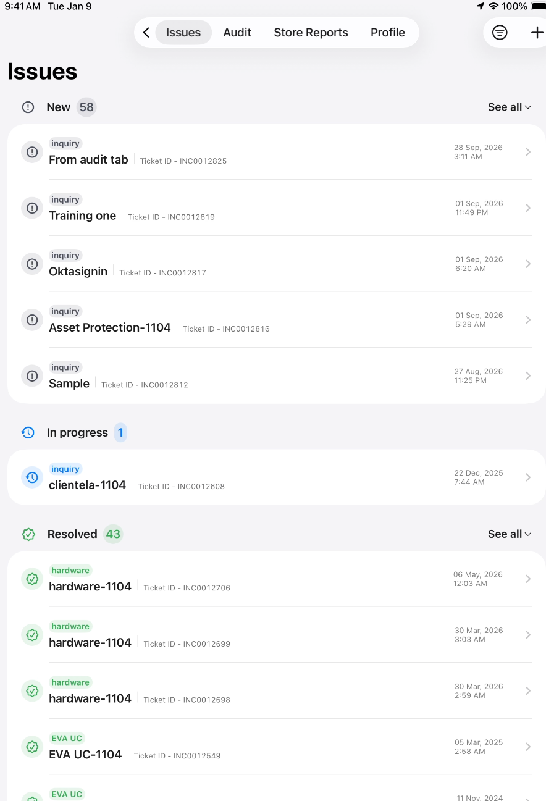
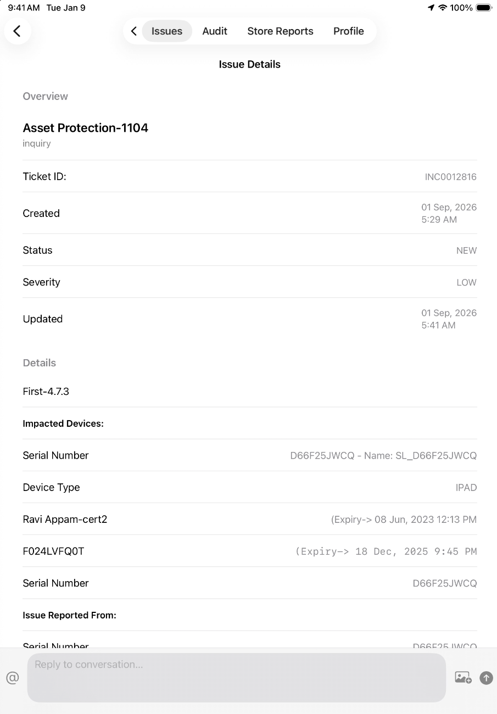
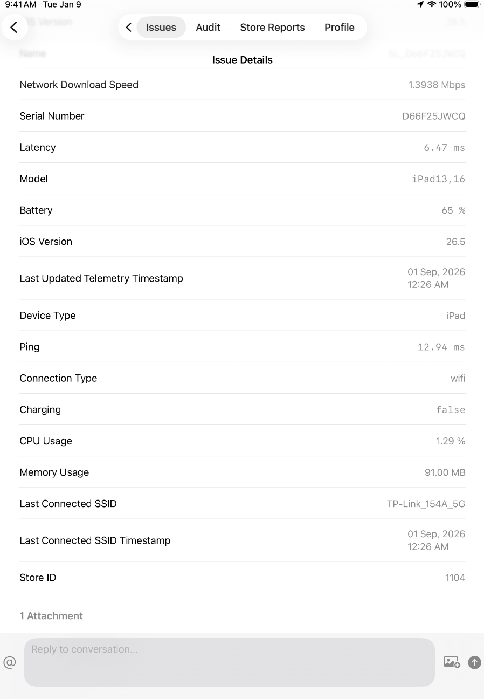
batteryWi-FilatencyOSapps
Faster first-call resolution.
10 · SM SERVICENOW01:14 to 01:24
Three screens fan in with a stagger: issues, detail, telemetry. Telemetry tags pop down the right. Close line lands last.
in: push left
Site Manager · Security
Device audit. Daily. By the store.
Every device accounted for. Exceptions surfaced and resolved in the store. A report for every store, every day.
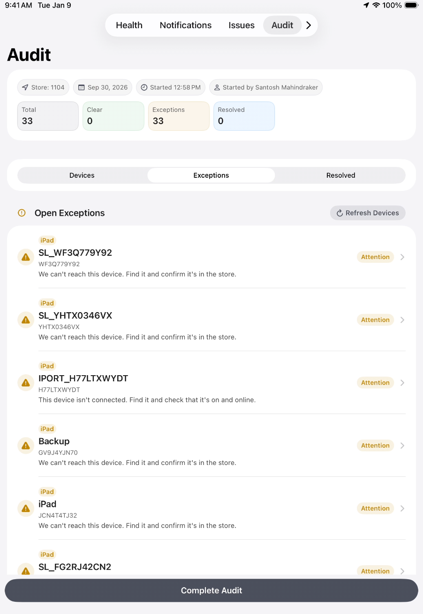
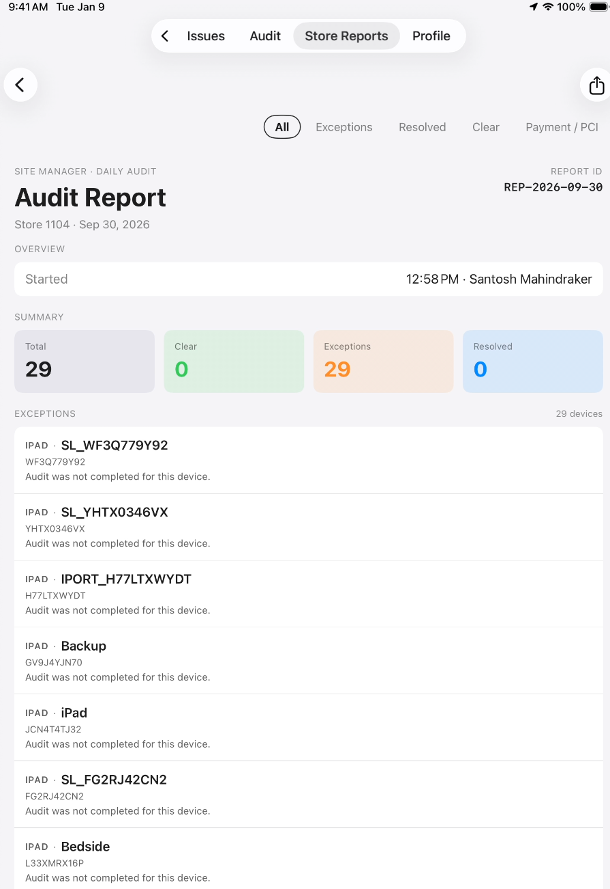
11 · SM AUDIT01:24 to 01:32
Headline in three hard beats, one word group per beat. The audit iPad and report slide in overlapping.
in: push left
Site Manager · Payment and PCI
Every PIN pad inspected. Every day.
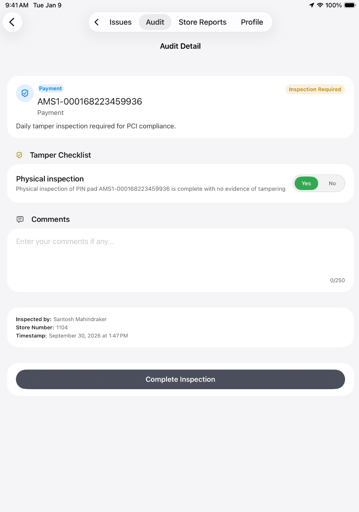
Signed, timestamped, in the audit.
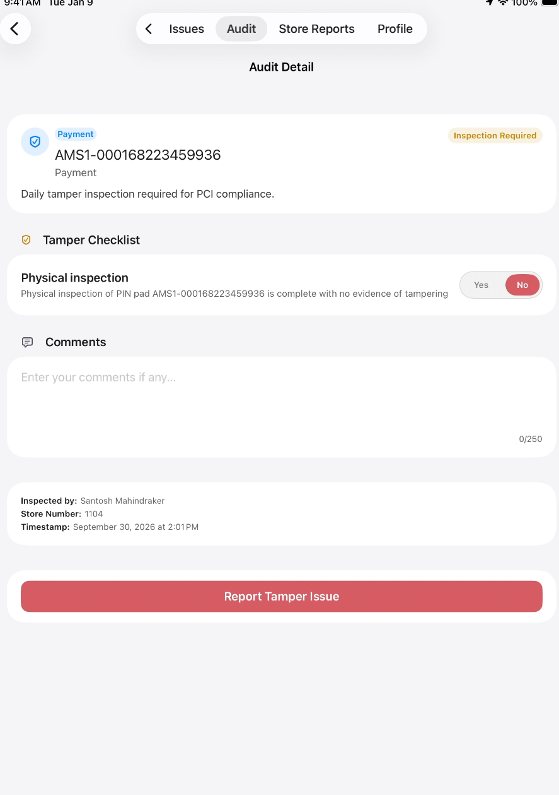
Tampering found? One tap opens a security and PCI incident.
12 · SM PCI01:32 to 01:41
Pass screen first, then the tamper screen slides in beside it with the only red of this act.
in: push left
Enterprise Manager · Security and store support
PIM and PAM requirements met. Support still enabled.
Least privilege for the platform. Full capability for the store.
Smart Support: the fix before the escalation.
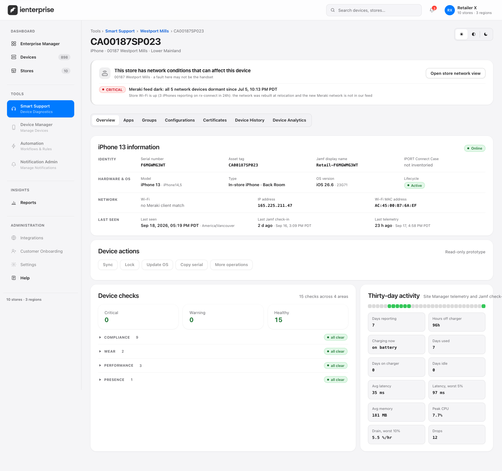
13 · EM SECURITY01:41 to 01:49
Two lines swap in place, platform then store. Smart Support line closes the scene and the act.
in: push left
Proof rhythm · act III
Every proof scene: kicker with green ring, one headline, one real screen, one continuous camera move.
Screens alternate right, left, center so eight proofs never read as eight identical slides. Fleet scenes (EM) use a browser window; store scenes (SM) use an iPad frame.
RHYTHM06 to 13
Act IV · What changed1:49 to 2:33
ienterprise
Business transformation at Lululemon.
01
Stores open ready, every morning.
Every store leader sees every device and knows the store is ready for business.
02
Issues resolve faster.
Incidents arrive with telemetry attached. Educators fix common issues on the spot.
03
Compliance became routine.
PIM and PAM requirements met. Audits and PCI tamper inspections done by the store, every day.
Retail mobile operations are now more efficient and effective.
Educators stayed with guests.
14 · OUTCOMES01:49 to 02:04
Rows reveal one at a time, ~3s each, on hairline rules. Then they dim and the closing card rises: the callback to "One guest, waiting."
in: cut (act change)
The takeaways
For other retailers.
010203 ●04050607
Align priorities with internal teams early.
Shared support is not shared urgency.
15 · TAKEAWAYS02:04 to 02:25
Fixed rail, lesson swaps in place, 3s each, all seven. Shown here at lesson 03. The active number turns white; no seven-card grid.
in: push left
Done for them. Not to them.
Retail mobility, managed in every store.
16 · CLOSE02:26 to 02:33
"Done for them." then "Not to them." Held 1.5s with nothing moving. Caption and lockup resolve; the green ring is the last thing lit.
in: cut
Seams and tokensone direction · leftward
Seam map
Content exits left, next scene enters right. Act changes cut through black.
01 cut
02 push
03 push
04 cut
05 cut
06 push
07 push
08 push
09 push
10 push
11 push
12 push
13 push
14 cut
15 push
16 cut
SEAM MAP16 seams
Tokens
stage #0B0B0D
card #1C1C1E
text #F5F5F7
text 2 #8E8E93
ready #30D158
alert #FF453A
Inter 900 · headlines
Inter 400 · body JETBRAINS MONO · KICKERS
TOKENSfrom the deck
Bans
No gradient text, glow or neon.
No fake product UI: real deck captures only.
No stock icons standing in for product.
No em dashes. Never "iEnterprise".
No slideshow: each proof keeps one camera move.
No screensaver: ambient motion must mean something.